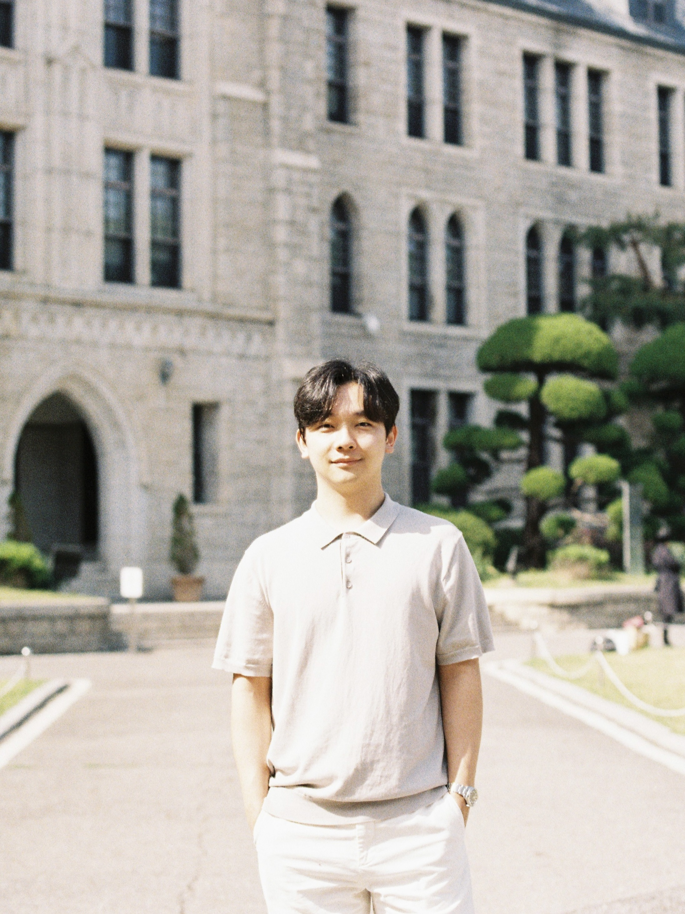

About

I am currently pursuing an M.S. in Electrical Engineering at Korea University, where I received my B.S. in Mechanical Engineering. I am interested in transforming soft robotic systems with complex dynamics into predictable, accurate, and practical systems through physics-based understanding and data-driven methods.
Publications
- S. Jang and Y. Cha, “Hysteresis compensation approach via combination of origami pump and soft pneumatic actuator,” Sensors and Actuators A: Physical, 2025.
- J. Min, S. Jang, S. Lee, and Y. Cha, “Ultralight soft wearable haptic interface with shear-normal-vibration feedback,” Advanced Intelligent Systems, 2025. (Selected as Back Cover)
- S. Lee, S. Jang, and Y. Cha, “Soft wearable thermo+touch haptic interface for virtual reality,” iScience, 2024.
Research
In Progress
Beyond Research